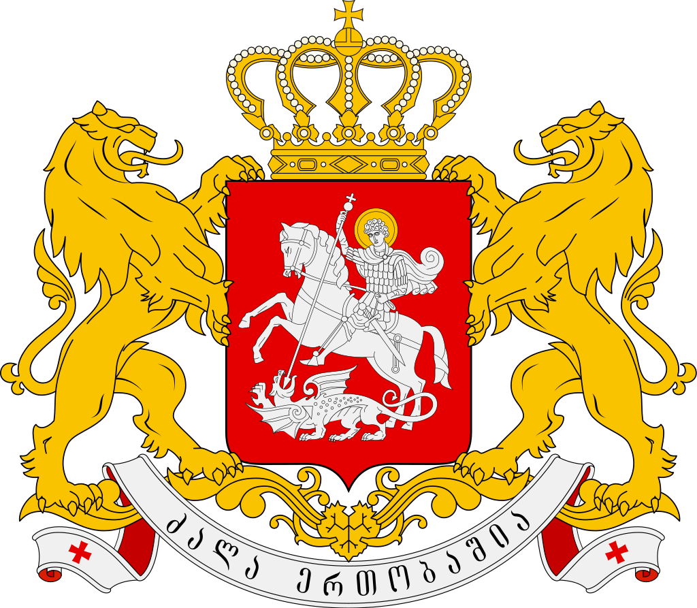

____
Флаг
Государственный флаг Грузии — прямоугольное полотнище белого цвета, в центре которого изображен большой красный крест, а в четырёх углах — одинаковые красные крестики в форме так называемого «Болнисского креста».

Герб
Современный герб Грузии представляет собой французский щит красного цвета, с изображением серебряной фигуры покровителя грузинской земли Святого Георгия на коне, поражающего змея копьём. Щит увенчан золотой королевской короной грузинского монаршего рода Багратиони, держат его два золотых льва. Под щитом находится лента с девизом «Сила в единстве». Этот герб частично основан на средневековом гербе грузинского царского дома Багратиони.

____